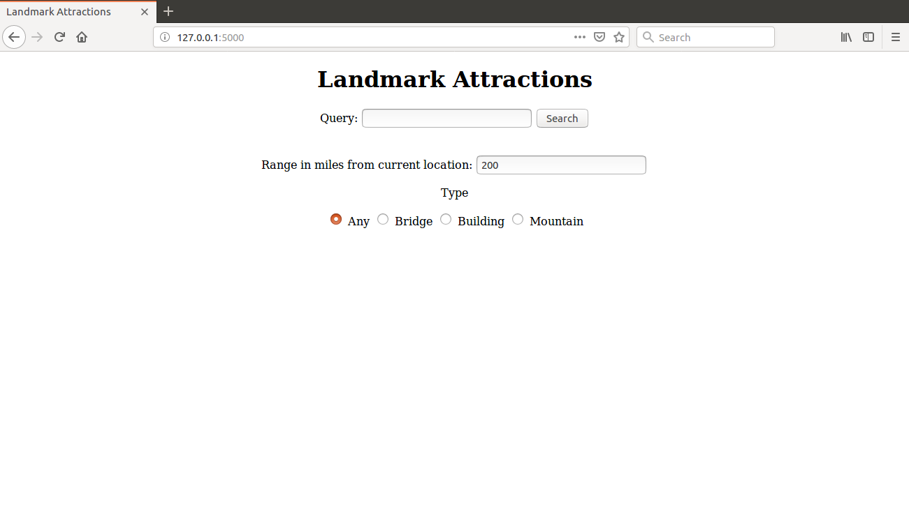
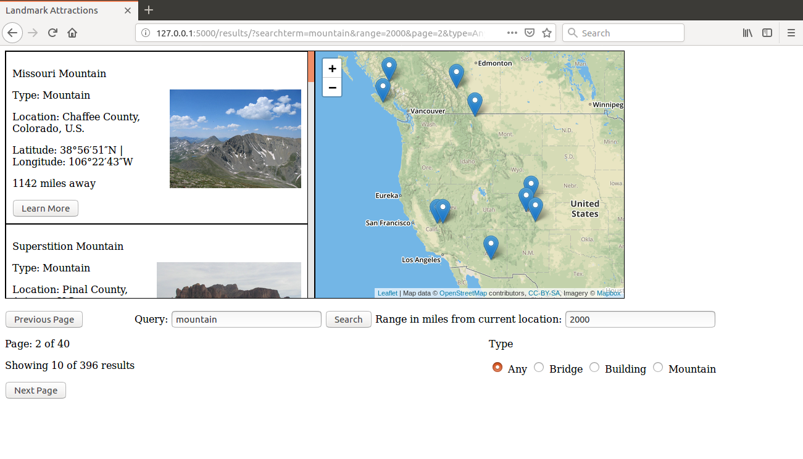
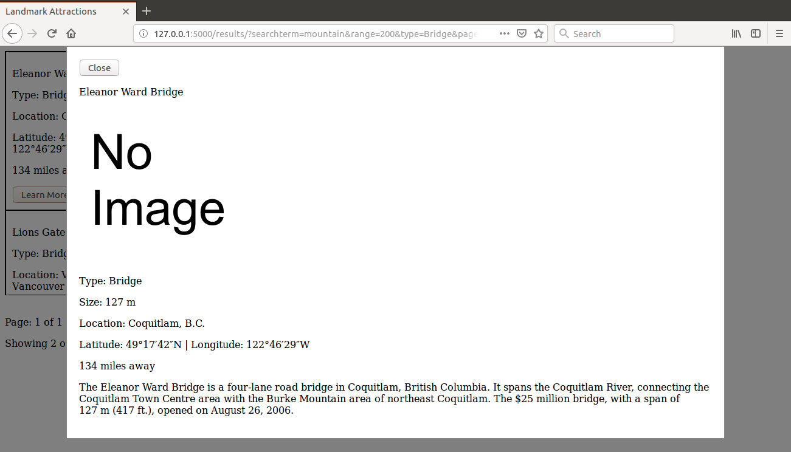
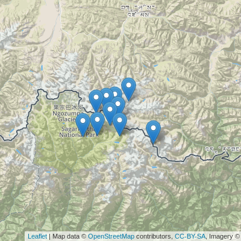

This was a team project for a course in college (CS 483) in Fall 2018. You can check it out on github here! https://github.com/kevbergstrom/LandmarkAttractions
What does this project do? Simply, this project allows you to search a database for landmarks. You can view information on the landmarks and see their geographical position on a map of the world. Landmarks are defined in this project as a building, bridge, or mountain. It is comprised of a frontend website and a backend Flask server. The database is populated by information scraped from Wikipedia.
This is the homepage for the project. It allows you to enter a query for searching the database. It looks for landmark defining terms like "Golden" or "Empire" in the search. You can also allows set a range in miles to search from your current position. Note that you have to allow it to access your current location otherwise it will just use Washington State University's location as the coordinates. The Haversine Formula is used to calculate how far away landmarks are from your location. You can also specify what type of landmark you want to search for.
Searching will take you to the results page. Here, all of the results from your query are displayed. They are ranked from highest relevance (top) to lowest relevance (bottom) based on your query. You can also update your search query and look browse results here. As to make the results scrollbar manageable, up to ten results will show per page. You can click on the next and previous buttons to view the next or previous ten results.
Results will show up on the side of the screen like below. A short snippet of the information availible for the landmark is shown in addition to a scaled down image of it. Clicking learn more will take you to a page with more details about the landmark.
This modal contains all of the information we have on the landmark and you can see the iamge in full resolution. Any information we don't have won't show up on this page. If the scraper couldn't find an image it will show you a default placeholder image instead.
Landmarks will also show up on a map that takes up most of the screen. Their latitude and longitude are factored in when placing them. You pan around it and hover over pins to see their names. clicking on a pin will open the associated landmark's information modal.
The frontend is mostly just standard html pages without any fancy styling. It uses the Leaflet API to get the map system working. This project was mostly made to demonstrate we knew the concepts behind search engines and gathering data off the web. I also had very little knowledge of web development in general back then (I didn't know what css was).
The backend uses Python and Flask to create a server and breathe life into the front end. It also uses Whoosh to turn the csv generated from scraping Wikipedia to create an inverted index. The frontend's queries are searched in the inverted index which is very efficient at looking for terms. The BM25 algorithm is used for the search. It looks for terms in the Name, Location, Description, and Type of each landmark.
What kind of data is being scraped? Since "Landmark" doesn't have a set in stone definition, I define landmark as a building, bridge, or mountain for the purposes of this project. Most of these things are well known and documented so I decided to uses Wikipedia as a source of data it would most likely contain data on landmarks. Data is stored in a csv like this:
[Name, Size, Location, Latitude, Longitude, Image, Type, Description]How is the data scraped? A python script is run before starting up the Flask server. This process is long and puts a heavy load on your internet as it visits thousands of Wikipedia pages, so it is likely to fail halfway through. Lucky for us the script will start where it left off. This script uses Wikipedia's API to search for different tags for each type of landmark.
mountainLinks = ['List of mountains by elevation']
bridgeLinks = ['List_of_bridges']
buildingLinks = ['List_of_tallest_buildings_in_Asia','List_of_tallest_buildings_in_the_United_States','List_of_tallest_buildings_in_Europe','List_of_tallest_buildings_in_Oceania','List_of_tallest_buildings_in_South_America','List_of_tallest_buildings_in_Africa']Then it visits each relevant URL on the page and attempts to scrape the data. It uses BeautifulSoup4 to parse through the usually over 2000+ lines of html and extract the useful parts. It looks for key words and html tags in the page. It also validates that the day scraped is in the right format. Then it adds the entry to the csv and goes on to the next page. There ends up being around 3459 entries in the csv.
What are the challenges of scraping from Wikipedia? Wikipedia is a wealth of knowledge meaning that there is just SO much data on it. Most Wikipedia pages on well known landmarks have a lot of data, everything from geology to environmental impact of the site. Most of the data I want is in the infocard box near the top of the page. So the Python script has to load the entire html code which is very large and time consuming to do so when the data I need takes up a fraction of the actual page. So you could say its not very efficient in scraping. It can take upwards of an hour to scrape all of the landmarks from wikipedia.
The whole reason that Wikipedia is so big is because it leverages the power of the public to fill out most of its knowledge. So when I want to look at the height of a building I look in the infobox for the word "height" but someone could have inputted "Roof" or "Top Floor" instead. So there is no guarantee with Wikipedia that what term you're looking for will be included in the page.
mountainTags = ['Elevation']
bridgeTags = ['Total length']
buildingTags = ['Architectural','Roof','Top Floor','Antenna spire','Height']
excludeTags = ['Destroyed','Demolished','Founded']
plannedTags = ['Proposed', 'Under construction','Approved']In addition to the sometimes arbitrary naming conventions there will be only be as much information on the page as people write. Sometimes people just don't have the information or the previous information was taken down for being false. So there is no guarantee that the data you want will exist on the page.